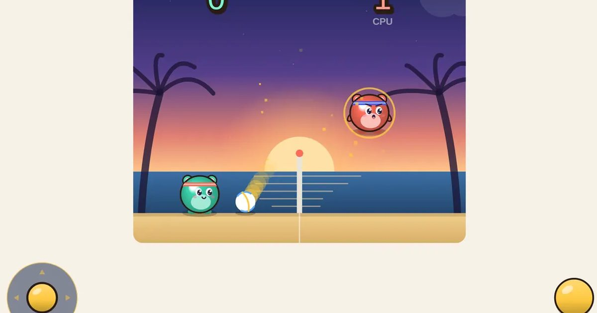

통통 배구
Bouncy Volley
대전 · 1P/2P무료설치 없음폰 · PC
▶ 지금 바로 하기로그인 없이 브라우저에서 바로 시작돼요
어떤 게임인가요?
통통 튀는 1:1 배구. 방향 + 스매시로 강타 방향을 고르고, 땅에서 스매시를 누르면 몸을 날려 받아냅니다. 5·10·15점제 선택.
목표 · 공을 상대 코트 바닥에 떨어뜨려 정한 점수(5 · 10 · 15점)를 먼저 따세요.
이렇게도 찾아요
배구 게임둘이서 배구배구 2인용volleyball game2 player volleyballpixel volleyball
#배구게임 #2인용게임 #추억의게임
게임 방법
- 공이 내 코트 바닥에 닿으면 상대가 1점. 점수를 딴 쪽이 다음 서브를 넣어요.
- 머리·몸에 맞은 공은 맞은 위치에서 먼 쪽으로 튕겨 나갑니다. 가장자리에 맞힐수록 멀리 가요.
- ▲(위 방향)로 점프하고, 공중에서 스매시! 몸이 어느 쪽을 보든 강타는 항상 상대 코트로 날아가고, 누르고 있는 방향에 따라 궤적이 바뀝니다.
- 땅에서 방향키와 스매시를 함께 누르면 그쪽으로 몸을 날려(다이빙) 먼 공을 높이 받아 올립니다. 착지 후 잠깐 누워 있어요.
- 공이 바닥에 떨어지는 순간 잠깐 슬로 모션이 걸려요.
등장하는 것들
- 스매시만 · 툭 · 멀리 못 가는 짧은 공
- 앞 + 스매시 · 코트 끝까지 쭉 뻗는 직선 강타
- ▼ + 스매시 · 수직 내려찍기
- 앞 + ▼ + 스매시 · 대각 내려찍기
- 앞 + ↑ + 스매시 · 높이 휘어 뒤쪽에 떨어지는 공
- ▲ + 스매시 · 높이 띄우기
- 땅에서 ◀▶ + 스매시 · 다이빙 받기
- CPU 실력 · 이길수록 강해져요
공략 팁
- 네트 가까이 점프해서 ▼+스매시로 내려찍으면 받기 어려워요.
- 상대가 네트 앞에 붙어 있으면 앞 + 스매시로 뒤쪽 끝까지 길게 보내세요.
- 먼 공은 포기하지 말고 다이빙!
 과일 베기
과일 베기 지뢰찾기
지뢰찾기 십장생 짝맞추기
십장생 짝맞추기 제기차기
제기차기 필살 격투
필살 격투 반응속도 테스트
반응속도 테스트